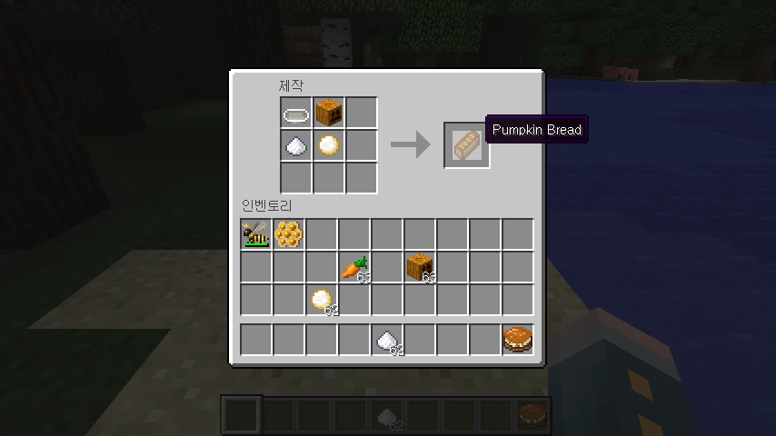

minecraft
목차
안녕하세요 마크설명서입니다
오늘은 생존법을 알아보겠습니다(마인크래프트)
먼저! 나무 부터 캐시는게 좋습니다.한....35개정도 캐세요.그리고 e키를눌러서
원목을 사각형이 4개있는 곳에 아무데나 놓으시면 판자가 나옵니다
그다음에는 나무곡괭이를 만들어야 합니다. 나무곡괭이는 제작대로 (이건 나무곡괭이 제작법이,아닙니다.) 제작해야합니다.
제작대는e키를 눌르시고,사각형4개 있는 곳에 모두 한개 씩 놓아야 합니다.그리고,제작대는
1번칸에놓아서 우클릭 하시면 제작대가 설치가 됩니다.그리고,제작대에 우클릭 하시면,사각형이
9칸이나옵니다.이제!막대기(거히 모든 아이템에 원제료입니다)를 만들어야합니다.막대기는 판자2개를 놓으시면 됩니다.
이제위에3칸에 모두 판자를 놓아주고,가운데 남은 2칸은 막대기로 모두채우면 됩니다.다른도구들도,위에세칸만 바꾸어주시면 됩니다.
이제,마지막으로,고기를 굽는방법을 가르쳐드리겠습니다.먼저 제작대에 정가운데 빼고,모두 조약돌을 놓으면 화로가 나올겁니다.
화로를 설치하고,우클릭을하고,아래칸에판자또는,석탄,블레이즈막대기,용암 양동이,석탄블록을두시고,
위에 구울 아이템을 놓아주시면 구워 집니다.그리고,판자를 구워주시면,목탄이 나옵니다.
저는 그냥 석탄으로 굽는것을 추천합니다.(아니면 말고)
궁금한게 있으시면 여기